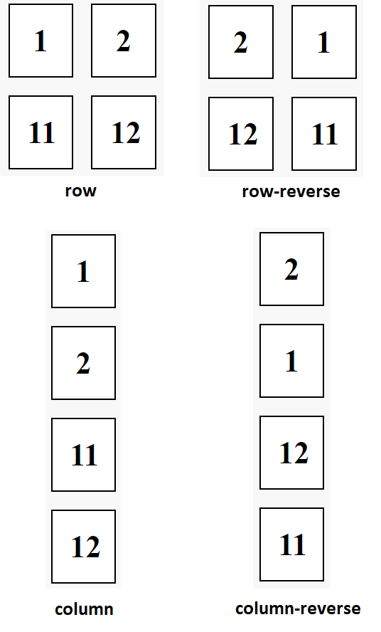

В предыдущем пункте была кратко продемонстрирована работа с компоновкой элементов в блоке по средствам flex. Сейчас же попробуем разобраться с другими способами компоновки, включая: обтекание, атрибут display (и позиционирование через grid, inline, flex, и так далее), строгое позиционирование.
Обтекание блока float предполагает, что все последующие блоки, идущие за элементом, к которому присвоено float, будут позиционироваться слева или справа от этого блока. Например, у нас имеется родительский блок, который содержит в себе перечень дочерних блоков с нумерацией. При присвоении к параметру float значения left – все блоки будут прикрепляться с правой стороны друг за другом, как показано на рисунке 9.
Рассмотрим работу float с точки зрения элемента, к которому это свойство установлено. Элемент со значением «float: left» позиционируется справа от родительского объекта. При этом последующий элемент (только первый), который идет за ним (он не обязательно может иметь float) будет также приклеен к своему родителю (к элементу с float). Таким образом, получается цепочка «Родитель элемента с float < элемент с float < первый элемент после блока с float». Однако, не всегда последний элемент этой цепочки будет обтекать своего родителя. Это случается, если этот последний элемент является блочной структурой. В таком случае необходимо либо присвоить этому блоку float с тем же значением, либо использовать другие технологии позиционирования.
Float может принимать параметры: left (позиция справа), right (позиция слева), inherit (наследование свойства float от родителя, применяется к дочерним элементам). Также можно использовать inline-end, inline-start для позиционирования элементов в зависимости от направления текста (то есть, если меняется direction, то inline автоматические изменяет свое значение на противоположное).

Атрибут display играет важную роль в компоновке элементов на странице. Например, с помощью таких значений, как flex и grid создаются сложные макеты с возможностью управления расположением внутри контейнера. Display имеет гибкие настройки, которые позволяют растягивать элементы по ширине экрана или переносить контент на новые строки. В отличии от ранее рассмотренного float, в display нет наследования, то есть этот атрибут должен быть указан для каждого элемента на странице, которому он необходим.
Display со значением flex говорит о том, что элементы внутри контейнера будут идти последовательно друг за другом. Flex-direction устанавливает направление этой последовательности: row, row-reverse, column, column-reverse. Row является значением по умолчанию и имеет направление слева направо. Row-reverse изменяет направление справа на лево. Следует учитывать то, что изменяется не порядок расположения элементов, а начало последовательности (то есть начало последовательности начинается с правой стороны от границы блока). Column располагает элементы сверху вниз, а column-reverse, наоборот, снизу вверх.
Стоит обратить внимание на принцип работы column, который имеет некоторое отличие от row (внимание на рисунок 10). Рассмотрим подробнее ситуацию: у нас имеется два блока с дочерними блоками (1,2) и (11,12), расположение которых устанавливается через flex-direction. Используя row, мы получаем ожидаемый результат и его зеркальное отражение в row-reverse (row отображается слева экрана, а row-reverse с правой стороны). Column также упорядочивает контент, но уже по вертикальной оси, из-за чего формируется лишь один столбец вместо двух, как это было с row. При этом контент в column-reverse начинается не с последовательности «2,1,12,11» снизу-вверх, а со второго блока, что формирует ряд «11,12,1,2».
В случае, если вы хотите, чтобы ваши блоки располагались также, как и в row (то есть блоки размещались в два столбца), то можно воспользоваться обтеканием float. Тогда два ряда будут идти друг за другом, как показано было на рисунке 9 (правда, в таком случае, можно обойтись без column).
Могут возникать ситуации, когда последовательность контента переполняет родительский элемент из-за чего он выходит за грани блока. Чтобы не допустить этого используется flex-wrap, который может иметь состояние wrap (элементы переносятся на новую строку или столбец) или nowrap (без переходов). Если вы хотите скрыть контент, который выходит за границы родительского блока, то можно воспользоваться overflow.
Возможно объединить запись flex-direction и flex-wrap, используя flex-flow, принимающего одновременно оба параметра. Например, «flow-flex: row-reverse wrap».
Еще одним атрибутом, который используют совместно с flex является justify-content. Этот атрибут настраивает позиционирование последовательности внутри блока (а ранее рассмотренные row и column устанавливают порядок контента). Позиционирование внутри блока через justify-content показано на рисунках 11 и 12.


Space-between равномерно распределяет элементы по контейнеру (блоку) с равными пробелами между элементами. Space-around осуществляет тоже самое, но с пробелами вокруг каждого элемента (то есть первый и последний элемент будут также иметь отступ от границ контейнера). Однако, эти пробелы не равномерны относительно расстояния между соседними элементами. Если необходимо, чтобы абсолютно все пробелы имели одинаковых размер, то используется space-evenly.
Через justify-content происходит позиционирование элементов flex-контейнера по его ширине. Аналогично, но для ячеек этого контейнера, существует justify-items, который обычно применяется к родительскому элементу для позиционирования дочерних блоков. Для работы с вертикальной осью требуется использование align-items, принимающего те же самые параметры (flex-start, flex-end, center). При наличии множества строк (когда есть свойство flex-wrap: wrap, а также последовательность формирует несколько строк или столбцов) рекомендуется использовать align-content (параметры такие же, но с доступом к space-between, space-around, space-evenly).
Настраивать отступы между контентом можно через свойство gap, которое осуществляет отступ со всех сторон, где есть соседний элемент (первый блок на рисунке 13, в котором отступ между всеми соседями 20 пикселей). Если у вас имеется несколько строк или столбцов, то отступы между ними устанавливаются через row-gap и column-gap.
Подробнее про атрибуты flex можно узнать в web-форме, в которой изложена таблица с практическими примерами (https://disk.yandex.ru/d/jpT3sXcOoPZwoA).

Атрибут display со значением grid формирует сетку, внутри которой располагаются элементы родительского блока. Для настройки сетки часто используются grid-template-columns и grid-template-rows для настройки размеров ячеек сетки. Например, «grid-template-columns: 25% 25% 25% 25%» будет формировать 4 столбца с контентом шириной с четверть доступного пространства. Если будет происходить переполнение, то лишние дочерние элементы будут переходить на новую строку автоматически. Схожим образом работает grid-template-rows. Для автоматического расчета необходимой ширины задаются в качестве параметров auto значение. Достаточно указать размер первого столбца / строки, а затем указать auto (второй столбец автоматически займет всю оставшуюся ширину). Например, «grid-template-columns: 25% auto auto auto» будет формировать такие же столбцы, как и в предыдущем примере. Если ваши колонны имеют одинаковый размер, то можно задать свойство «repeat (4, 25%)», которое создает 4 столбца с 25% шириной от родительского элемента. В ситуациях, когда заранее неизвестно количество столбцов (например, если размеры окна изменяются динамически), будет полезно автоматическое заполнение «repeat (auto-fill, 125px)». При создании сетки с использованием grid-template-columns и grid-template-rows – существует совместная запись в виде grid-template, принимающих параметры: строки, «/», столбцы («grid-template: 1fr 1fr / repeat (2, 50%)»).
Особенность grid в более точном управлении сеткой, с возможностью объединения контента и точечной вставки через имена. Например, имеется сетка 4 на 3, на который необходимо произвольно разместить 9 элементов. Для решения этой задачи можно воспользоваться grid-template-areas, в котором указывается разметка имен. В качестве точки устанавливается пустой блок в сетке. На рисунке 14 показана точечная расстановка элементов на сетке.

Однако, сложность данного подхода в том, что каждый элемент должен быть привязан через grid-area (то есть элементы сетки должны иметь это css свойство для отображения). Но с другой стороны, это может быть эффективным средством для компоновки шапки, подвала, навигационного меню, и другого контента сайта.
Для выравнивания текста по горизонтальной и вертикальной оси используются такие же свойства, как и в случае с flex (justify-content, justify-items / align-content, align-items). Justify-self и align-self центрируют конкретный элемент в сетке. С помощью grid-column-start, grid-column-end, grid-row-start, grid-row-end (а также их сокращенной версии grid-column, grid-row) осуществляется расширение элемента и размещение элемента на сетке. Таким образом, например, можно изменять порядок отображения, замещая строки размещения контента, или объединять контент под несколько строк и столбцов. На рисунке 15 изображена компоновка ячеек сетки и их размещение (на примере el9).

Помимо flex и grid, у display есть ряд других значений, которые он может приниматься. Чтобы удалить контейнер из документа display принимает параметр none, который стирает само существование блока из страницы. Значение block обозначает, что элемент считается блочным и может быть изменен соответствующими блочными свойствами. Inline, наоборот, является строчным элементом, который занимает столько место, сколько ему нужно.
Атрибут position в стилях используется для указания метода позиционирования на странице. Position может принимать одно из следующих значений: static, relative, absolute, fixed. Статичное поведение размещает элемент согласно правилам нормального расположения элементов в документе (это также значение по умолчанию). Relative является относительным позиционированием от обычного положения элемента. Смещение задается через left, right, top, bottom. Например, у нас имеется grid сетка из одной строки и трех столбцов с нумерацией 1, 2, 3 (никаких свойств, помимо display и grid-template-columns не применяется), и необходимо вынести второй элемент на одну строку вниз без смещения позиционирования элементов сетки. Это можно реализовать через явное позиционирование grid-start-row и grid-start-column для всех элементов сетки. Однако, будет проще воспользоваться «position: relative; top: size;» для второго элемента сетки. Значение absolute вынимает элемент из нормального позиционирования в документе. Элемент с таким свойством позиционируется относительно окна браузера или относительно ближайшего предка с не статичным значением position. Возвращаясь к предыдущему примеру, если второй элемент будет иметь: «position: absolute; top: size;», то он разместится под первым блоком, а третий обязательно сместиться на один столбец левее, поскольку второй вырван из обычного потока позиционирования. Фиксированное поведение (fixed) размещается элемент относительно окна браузера и остается неподвижным даже при прокрутке страницы.
Значения relative, absolute, fixed фиксируются с помощью свойств left, right, bottom, top (отступ слева, справа, снизу, сверху). Inset объединяет все направления в одну строку. Например, «inset: 100px 0 0 20px» (left, right, bottom, top) разместят объект на 20 пикселей вниз и на 100 пикселей вправо относительно границ окна браузера.
Предположим, вы хотите вести свой сайт-блог, в котором будут публиковаться ваши рецензии на вышедшие фильмы и сериалы. В качестве главной страницы было решено сделать несколько вступлений к публикациям из разных категорий, при клике на которые пользователя будет перекидывать на полную версию. Проблема может заключаться в компоновке элементов, поскольку наличие множества примеров, идущих друг за другом, подразумевает долгую прокрутку контента, что может быть не очень удобным в качестве preview. Одним из путей решения этого недостатка является расположения элементов в несколько колонн, которые будут являться категориями вашего обозреваемого контента (аниме, манга, ранобэ). Полоса прокрутки в такой ситуации уже сократиться втрое, но этого все равно может быть недостаточно. Для работы в одностраничном пространстве (видимость высоты экрана пользователя) можно добавить скрытый скролл для прокрутки колонн. На рисунке 16 показана структуру такой страницы.

Для создания сетки объявляется ассоциативный тег section, который подразумевает, раздел (уместно использовать при наличии разного характера контента: рецензии, мнение, новости). Раздел, как самый главный контейнер будет иметь режим отображения display grid с настройками колонн: 1fr 1fr 1fr (единица измерения – фракция, обозначает долю экрана, в этом случае 1/3). В качестве содержимого раздела устанавливаются его компоненты, которые объявляются в article. Таким образом, в структуре будет содержаться три article пространства, где будут храниться превью на публикации. Каждая запись имеет 4 элемента: заголовок, постер, описание, линия разделения. Все элементы внутри column-items (наименование класса) располагаются по display flex с направлением column (то есть, последовательность сверху вниз). На рисунке 17 изображены CSS стили для column-content и column-items описывающие поведение столбцов.

Контейнер для столбцов (column-content), как упоминалось ранее, представляет собой сетку с тремя колоннами, размерность в 1/3 страницы браузера, видимой пользователю. Между столбцами имеется отступ (gap) в 30 пикселей, чтобы визуально разграничить категории контента. Внутренний отступ padding осуществляет отступ сетки от всех краев окна браузера (body – родитель) на 20 пикселей. Для некоторой стилистики была добавлена трансформация (transform), которая наклоняет все колонны на 0.5 градуса.
Сами столбцы описываются в column-items. Display flex указывает на последовательность всех элементов, а flex-direction на его направление. Для отцентровки элементов используется align-items, выравнивающий элементы по поперечной оси (в данном случае это горизонтальная). Через height настраивается высота колонн, которая равна 100vh (единицы viewport height, обозначающие проценты высоты экрана), что растягивает колонны по высоте окна браузера. Внутренний скролл настраивается через overflow-x (сокрытие горизонтального скролла) и scroll-behavior (поведение полосы прокрутки, smooth означается плавную анимацию прокрутки). Для сокрытия вертикальной полосы используется «column-items::-webkit-scrollbar» с параметрами width и height со значением ноль. Внешняя и внутренняя тень настраиваются через box-shadow, а ключевое слово inset обозначает обратный (то есть внутренний). Финальным этапом является анимация появления при загрузке страницы, настраиваемая в animation с параметрами: имя анимации (определяется в keyframes), длительность, вид анимации. Ease-out говорит о том, что анимация будет замедляться по мере приближения к концу. Animation-fill-mode со свойством both указывает на то, что анимация будет применять стили из keyframes и сохранять их после окончания анимации. Полученный результат после применения стилей показан на рисунке 18.

К заголовкам, тексту, изображениям также были применены стили, которые можно увидеть на рисунке 18. К тексту были добавлены эффекты свечения (внешняя тень), форматирование (text-align: justify) и интервал между строками (line-weight: 1.5), размеры, внешние отступы по нижней границе, и так далее.
К изображениям были добавлены эффекты наведения, которые осветляли само изображение и его границы. Ко всем изображениям изначально был применен фильтр brightness, который отвечает за осветление и затемнение элементов (в этом примере изображения были слегка затемнены для большего сочетания с темной темой страницы).
В правом верхнем углу расположена небольшая кнопка, которая открывает навигационную панель с пунктами: главная, блог, рецензии, контакты. При переходе по блогу и рецензиям, пользователя перекидывает на новые страницы (открывающиеся в этой же вкладке) с подробностями о контенте и новыми функциями (комментарии, поиск, фильтры, и прочие атрибуты подобных страниц). В контактах указывается перечень контактных данных для связи с модераторами, к которым можно обратиться в качестве технической поддержки или с целью предложения допуска своего контента к публикации. На рисунке 19 изображен внешний вид навигационной панели.

По сути, навигационная панель и является шапкой этого сайта-блога, поскольку это единственная панель, доступная пользователю, для переключения по содержимому сайта. Тегом nav обозначаем, что следующий контент будет являться навигационной панелью (в принципе, этот тег не обязателен в этой конструкции и все можно сделать в одном блоке article). В блоке с классом headerList указываем перечень содержимого. Сама HTML конструкция показана на рисунке 20.

Оба контейнера (nav-button, header) зафиксированы в одном положении с помощью fixed позиционирования. Таким образом, несмотря на размеры окна и прокрутку страницы – элементы будут оставаться на одном месте. HeadetList имеет flex компоновку (как и столбцы превью контента). Все цвета для элементов идентичны цветовой схеме колонн и их контента. Для плавности подсветки при наведении к элементам добавлено свойство transition. Остальные настройки стилистики показаны на рисунке 21.